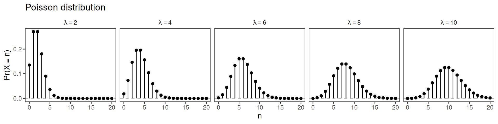
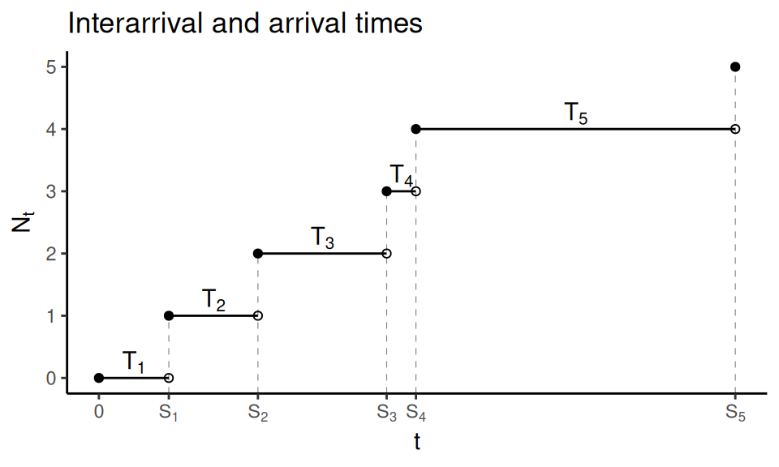
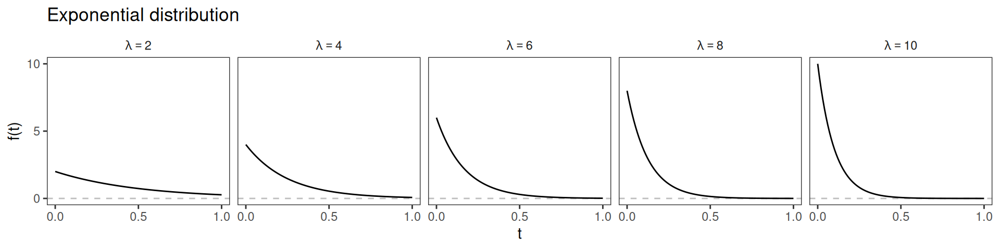
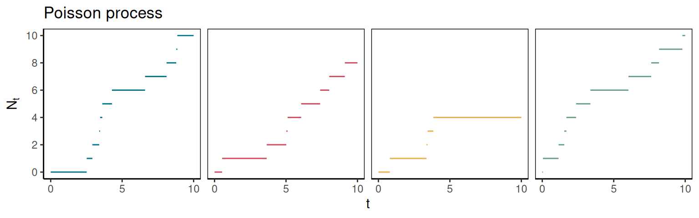
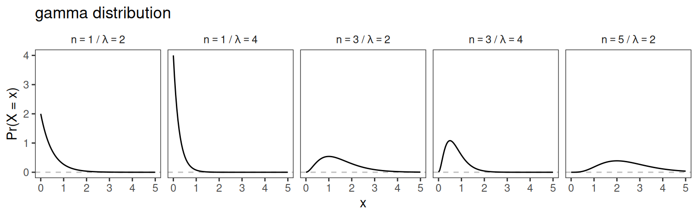
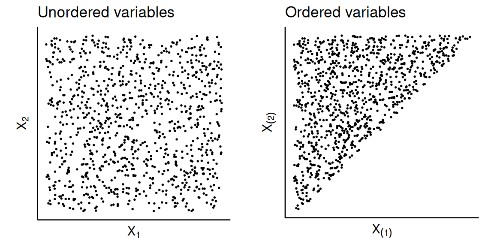
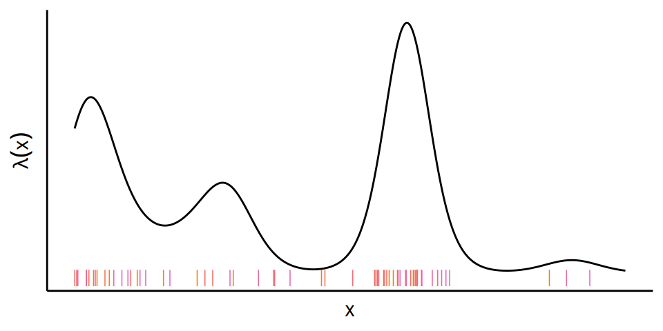
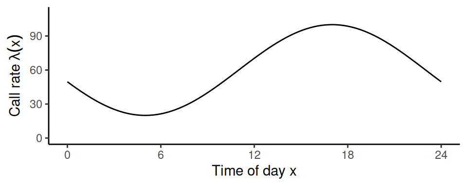
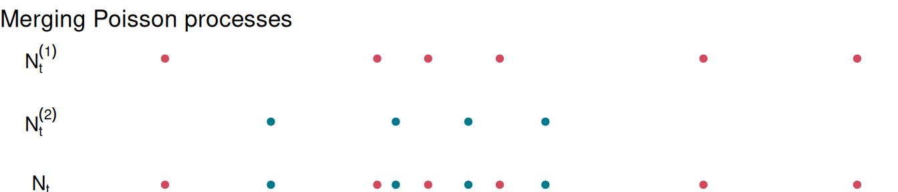

We now turn to a different type of stochastic process, called a counting process. A counting process is useful to model the number or timing of events of interest, e.g., births in a hospital, goals scored by a hockey team, or earthquakes in a region.
Definition 3.1
A stochastic process \((N_t)_{t \geq 0}\) is called a counting process if:
for any \(t \geq 0\), \(N_t \geq 0\);
for any \(t \geq 0\), \(N_t\) is integer-valued;
for any \(0 \leq s \leq t\), \(N_s \leq N_t\).
We interpret \(N_t\) as the total number of events that have occurred by time \(t\).
Remarks:
In the definition of a counting process, the time index \(t\) is defined over a continuous rather than discrete space. We can make that explicit by writing \((N_t)_{t \geq 0}\), but sometimes we omit it and simply denote the process as \((N_t)\). We use the letter \(t\) to denote continuous time, in contrast with \(n\) for the discrete time index in the previous chapter.
Here, we use the term “events” in the common sense, rather than in the technical sense from probability theory.
We say that the stochastic process \((N_t)\) has independent increments if, for any \(0 \leq q < r \leq s < t\), the random variables \(N_r - N_q\) and \(N_t - N_s\) are independent.
We say that the stochastic process \((N_t)\) has stationary increments if, for any \(s, t > 0\), the random variables \(N_t\) and \(N_{s + t} - N_s\) have the same distribution.
If the process \((N_t)\) has independent and stationary increments, the random variable \(N_t - N_s\) depends only on the length of the time interval \(t - s\), and not on the specific values of \(s\) and \(t\).
Definition 3.3
A counting process \((N_t)_{t \geq 0}\) is called a Poisson process with rate \(\lambda > 0\) if:
\(N_0 = 0\), i.e., no events have occurred yet at time 0;
\((N_t)\) has independent and stationary increments;
\(N_t \sim \text{Poisson}(\lambda t)\) for any \(t > 0\), i.e., \[
\Pr(N_t = n) = e^{-\lambda t} \frac{(\lambda t)^n}{n!},\quad \text{for } n \in \mathbb{N}.
\]
There are at least three alternative definitions of the Poisson process, and we will discuss another one a little later.
From the definition of a Poisson process, we can see that the number of events over any interval of length\(t\) follows a Poisson distribution with rate \(\lambda t\). Indeed, because the increments of the process are stationary, \(N_t\) and \(N_{s + t} - N_s\) have the same distribution for any \(s, t > 0\), i.e., \[
\Pr(N_{s + t} - N_s = n) = e^{-\lambda t} \frac{(\lambda t)^n}{n!},\quad \text{for } n \in \mathbb{N}.
\]
As a reminder, Figure fig-pois-pmf shows the probability mass function of the Poisson distribution for five different values of the rate parameter \(\lambda\).

Figure 3.2: Probability mass function of Poisson distribution for different values of the rate parameter \(\lambda\).
The rate parameter \(\lambda\) of the process controls how often events happen: larger values of \(\lambda\) correspond to more frequent events. Remember that both the mean and variance of the Poisson distribution are equal to the rate parameter, so we know that, on average, \(\lambda t\) events will take place in an interval of length \(t\). In other words, the number of events is proportional to the rate parameter (\(\lambda\)) and to the length of the interval (\(t\)). It is intuitive that, on average, more events should take place over a longer interval; for a Poisson process, we expect twice as many events over an interval twice as long, and so on. The interpretation of \(\lambda\) is the average number of events over an interval of length 1.
Example 3.1
Assume that the number of customers who arrive at Superstore follows a Poisson process with an average rate of \(\lambda = 2\) customers per minute.
What is the probability that exactly 10 customers arrive in the next 3 minutes?
Let \(N_3\) be the number of customers that arrive in the next 3 minutes. By definition of the Poisson process, \(N_3\) follows a Poisson distribution with rate \(3 \lambda = 6\). Then, we have \[
\Pr(N_3 = 10) = e^{-6} \frac{6^{10}}{10 !} = 0.041
\]
What is the probability that at least 2 customers arrive in the next 30 seconds?
The number of customers in the next 30 seconds, \(N_{0.5}\), follows a Poisson distribution with rate \(0.5 \lambda = 1\), and so \[
\begin{aligned}
\Pr(N_{0.5} \geq 2) & = 1 - \Pr(N_{0.5} < 2) \\
& = 1 - \Pr(N_{0.5} = 0) - \Pr(N_{0.5} = 1) \\
& = 1 - e^{-1} \frac{1^0}{0 !} - e^{-1} \frac{1^1}{1 !} \\
& = 0.264
\end{aligned}
\]
What is the probability that the next customer will arrive within 15 seconds?
This is equivalent to the probability the number of customers arriving in the next 15 seconds, \(N_{0.25}\), is at least one. We know that \(N_{0.25}\) follows a Poisson distribution with rate \(0.25 \lambda = 0.5\), so \[
\begin{aligned}
\Pr(N_{0.25} \geq 1) & = 1 - \Pr(N_{0.25} = 0) \\
& = 1 - e^{-0.5} \frac{0.5^0}{0 !} \\
& = 0.393
\end{aligned}
\]
What is the probability that exactly 3 customers arrive in the first minute and exactly 10 customers arrive in the first three minutes?
Let \(N_1\) and \(N_3\) be the numbers of customers arriving in the first minute and in the first three minutes, respectively. These two random variables are not independent, but we can rephrase the question in terms of \(N_1\) and \(N_3 - N_1\) (the number of customers arriving in the second and third minutes), which are independent. We want the probability that \(N_1 = 3\) and \(N_3 - N_1 = 7\), and we know that \(N_1 \sim \text{Poisson}(2)\) and \(N_3 - N_1 \sim \text{Poisson}(4)\), so \[
\begin{aligned}
\Pr(N_1 = 3, N_3 = 10) & = \Pr(N_1 = 3) \Pr(N_3 = 10 \mid N_1 = 3) \\
& = \Pr(N_1 = 3) \Pr(N_3 - N_1 = 7 \mid N_1 = 3) \\
& = \Pr(N_1 = 3) \Pr(N_3 - N_1 = 7) \\
& = e^{-2} \frac{2^3}{3 !} \times e^{-4} \frac{4^7}{7 !} \\
& = 0.011
\end{aligned}
\]
In many contexts, the variable of interest is not the number of events \(N_t\), but the times at which events occur, and the lengths of time intervals between events (e.g., expected time between two high-magnitude earthquakes in a region). For example, we might be interested in the times between events, denoted as \(T_1, T_2, \dots\) in Figure fig-interarrival-times, or in the times of events, denoted as \(S_1, S_2, \dots\) in Figure fig-interarrival-times. These random variables are called “interarrival times” and “arrival times”, respectively.

Figure 3.3: Illustration of interarrival times \(T_1, T_2, \dots\) and arrival times \(S_1, S_2, \dots\) of a Poisson process.
Definition 3.4
The interarrival times of a Poisson process are the random variables measuring the lengths of time intervals between successive events. We denote as \(T_n\) the inter-arrival time between the \((n-1)^\text{th}\) and the \(n^\text{th}\) events (where \(T_1\) is the time of the first event).
Definition 3.5
The arrival times of a Poisson process are the times at which events occur. We denote as \(S_n\) the arrival time for the \(n^\text{th}\) event, i.e., \(S_n = T_1 + T_2 + \dots + T_n\).
The terminology of “arrivals” comes from queueing theory, where the focus is on modelling the arrivals and departures of customers from a queue. The interarrival times are also sometimes called “waiting times”, and the arrival times are sometimes called “event times”.
3.1.2 Infinitesimal definition
An alternative definition of the Poisson process describes the distribution of points over infinitesimal time intervals. It requires the little-o notation, and we first define this. We write \(f(h) = o(h)\) (read as “little-o of \(h\)”), if \[
\lim_{h \to 0} \frac{f(h)}{h} = 0.
\] That is, we use \(o(h)\) to denote any terms that are small relative to \(h\) when \(h \to 0\), in the technical sense described above. Note that the little-o notation is only meaningful for a given limit (here, \(h \to 0\)), and you should keep this in mind when reading the following definition.
Definition 3.6 (alternative definition of Poisson process)
The counting process \((N_t)_{t \geq 0}\) is a Poisson process with rate \(\lambda > 0\) if
\(N_0 = 0\);
\((N_t)\) has independent increments;
\(\Pr(N_{t + h} - N_t = 1) = \lambda h + o(h)\);
\(\Pr(N_{t + h} - N_t > 1) = o(h)\).
We will not prove the equivalence of the two definitions, but it turns out that these conditions imply that the count of events over a time interval follows a Poisson distribution.
Some books present all continuous-time stochastic processes using the little-o notation, so it is good to understand the intuition behind it. Essentially, condition 4 ensures that there cannot be more than one event in a very short time interval (or at least, the probability of that happening is negligible). Condition 3 states that the probability of an event occurring over a short time interval is approximately proportional to the rate parameter of the process, \(\lambda\).
3.2 Distribution of interarrival times
Proposition 3.1
Consider a Poisson process \((N_t)\) with rate parameter \(\lambda > 0\). The interarrival times of \((N_t)\) (\(T_1, T_2, \dots\)) are independent exponentially distributed random variables with rate parameter \(\lambda\). That is, they have the probability distribution function \(f(t) = \lambda e^{-\lambda t}\), for \(t \geq 0\).
Proof
We first prove the result for \(T_1\), the time of the first event. We have \(\Pr(T_1 > t) = \Pr(N_t = 0) = e^{-\lambda t}\). We recognise the cumulative distribution function of the exponential distribution, so \(T_1 \sim \text{Exp}(\lambda)\).
Then, we turn to \(T_{n+1}\), the interarrival time between the \(n^\text{th}\) and the \((n+1)^\text{th}\) events, for \(n \geq 1\): \[
\begin{aligned}
\Pr(T_{n+1} > t) & = \int_0^\infty \Pr(T_{n+1} > t \mid S_n = s) f_{S_n}(s)\ ds && \text{(a)}\\
& = \int_0^\infty \Pr(N_{s + t} - N_s = 0 \mid N_s = n) f_{S_n}(s)\ ds && \text{(b)} \\
& = \int_0^\infty \Pr(N_t = 0) f_{S_n}(s)\ ds && \text{(c)} \\
& = e^{-\lambda t}\int_0^\infty f_{S_n} (s)\ ds && \text{(d)}\\
& = e^{-\lambda t}, && \text{(e)}
\end{aligned}
\] showing that \(T_{n+1}\) follows an exponential distribution with rate \(\lambda\). In the derivation above, (a) is the continuous version of the law of total probability, (b) translates a statement about interarrival times \((T_n)\) to be in terms of counts \((N_t)\), (c) uses the stationarity and independence of increments in a Poisson process, (d) substitutes the probability mass function of the Poisson distribution, and (e) follows from the fact that probability density functions integrate to 1 (including \(f_{S_n}\)).
The exponential distribution has a mode of zero, and a mean of \(1/\lambda\). This is consistent with our intuition of the Poisson process: the higher the rate, the shorter the interarrival times. The exponential distribution is illustrated in Figure fig-exp-pdf.

Figure 3.4: Probability density function of exponential distribution for different values of the rate parameter \(\lambda\).
3.2.1 Memorylessness
The above result on the distribution of interarrival times is important because the exponential distribution is the only continuous distribution with the memorylessness property.
Definition 3.7
A random variable \(X\) is memoryless if, for all \(s, t > 0\), \[
\Pr(X > t + s \mid X > t) = \Pr(X > s).
\]
Because the interarrival times (\(T_1, T_2, \dots\)) of a Poisson process follow an exponential distribution, they have the memoryless property, and so we have \[
\Pr(T_n > t + s \mid T_n > t) = \Pr(T_n > s),
\] for all \(s, t > 0\). In words, this means that, regardless of how long we have been waiting since the last event (which occurred at time \(t\)), the distribution of the time we still need to wait until the next event is the same as the distribution of the original waiting time.
Example 3.2
Assume that a bakery has on average 6 customers per hour, and that the interarrival times between customers follow an exponential distribution (with rate parameter \(\lambda = 6\)). The mean interarrival time is \(1/6\) hour = 10 minutes. Let’s say that the last customer came 30 minutes ago. This is an unusually long waiting time, so we might expect that the next customer is likely to arrive in the next few minutes, but this would be incorrect. In fact, regardless of the 30-minute wait, the distribution of the waiting time until the next customer arrives is still an exponential distribution with mean 10 minutes. This is because different customers arrive at the bakery independently, and the arrival of the next customer does not depend on the last customer.
A physical example of memorylessness is radioactive decay. Carbon-14 atoms decay into Nitrogen-14 over time, which takes 8267 years on average (this is called the “mean-life” of Carbon-14). For a given atom, time until decay follows an exponential distribution with rate parameter \(\lambda = 1/8267\). The probability that the atom decays in the next year does not depend on its age.
3.2.2 Simulating from a Poisson process
The exponential distribution of interarrival times give us a convenient way to simulate from a Poisson process, based on the following algorithm. We initialise \(S_0 = 0\) and, for \(n = 1, 2, \dots\),
generate an interarrival time \(T_n\) from the exponential distribution;
compute the arrival time \(S_n = S_{n - 1} + T_n\);
let \(N_t = n - 1\) for \(S_{n - 1} \leq t < S_n\).
In practice, we simulate the interarrival and the arrival times (e.g., using rexp() in R), and store those. Then, for a given time \(t\), we find the corresponding value of the Poisson process (\(n\)) by looking for the two successive arrival times \(S_n\) and \(S_{n+1}\) such that \(S_{n} \leq t < S_{n + 1}\). Figure fig-sim-pois-process shows four example realisations of a Poisson process with rate parameter \(\lambda = 0.8\) over \(0 \leq t \leq 10\), simulated using this algorithm.

Figure 3.5: Four realisations of a Poisson process with rate \(\lambda = 0.8\).
The following R chunk shows some example code that could be used to simulate from that Poisson process, and to find the count \(N_t\) based on the sequence of simulated arrival times. This code could easily be modified to change the rate, the time window, or the number of realisations.
# Set random seed for reproducibilityset.seed(652)# Set a few parameterstmax <-10rate <-0.8# Loop until reaching tmaxtimes <-0while(times[length(times)] < tmax) { interarrival_time <-rexp(n =1, rate = rate) arrival_time <- times[length(times)] + interarrival_time times <-c(times, arrival_time)}# Remove 0, which is not an event timetimes <- times[-1]times
# Get event count in [0, 5] from arrival timescount <-length(which(times <5))count
[1] 6
3.3 Distribution of arrival times
There are two different results about the distribution of arrival times in a Poisson process: the distribution of one arrival time \(S_n\), and the joint distribution of all arrival times conditional on the number of events.
3.3.1 Marginal distribution of \(S_n\)
We first present a basic result about the distribution of the sum of independent random variables, which uses an operation called the convolution of two functions.
Proposition 3.2
Let \(X\) and \(Y\) be two independent continuous random variables, and \(Z = X + Y\). The probability density function of \(Z\) is \[
f_Z(z) = \int_{-\infty}^\infty f_X(z - y) f_Y(y)\ dy.
\]
Proof
By the law of total probability, \[
\begin{aligned}
f(Z = z) & = \int_{-\infty}^\infty f(Z = z, Y = y)\ dy \\
& = \int_{-\infty}^\infty f(X + Y = z, Y = y)\ dy \\
& = \int_{-\infty}^\infty f(X = z - y, Y = y)\ dy \\
& = \int_{-\infty}^\infty f(X = z - y) f(Y = y)\ dy
\end{aligned}
\]
The intuition behind this formula is that we consider every possible combination of values for \(X\) and \(Y\) that would yield \(Z = z\). Because \(Z\) is defined as the sum of \(X\) and \(Y\), we know that, if \(Z = z\) and \(Y = y\), then we must have \(X = z - y\). So, to go through all possible combinations, we integrate (“sum”) over all possible values for \(Y\), and this also determines the value of \(X\). This is illustrated visually in Grant Sanderson’s Youtube video “Convolutions | Why X+Y in probability is a beautiful mess”. A similar result applies in the case of two discrete random variables, with a sum instead of an integral.
Proposition 3.3
Consider a Poisson process with parameter \(\lambda\), and let \(S_n\) be the \(n^\text{th}\) arrival time for that process. Then, \(S_n \sim \text{gamma}(n, \lambda)\), where \(n\) is called the shape parameter, and \(\lambda\) the rate parameter of the gamma distribution. That is, the probability density function of \(S_n\) is \[
f_{S_n}(t) = \frac{\lambda^n t^{n-1}}{(n-1)!} e^{-\lambda t},\quad \text{for } t > 0.
\]
Proof
By definition, \(S_n = T_1 + T_2 + \dots + T_n\) is the sum of \(n\) independent random variables that all follow an exponential distribution with rate parameter \(\lambda\). We can use a proof by induction to show that a random variable defined by this sum follows a gamma distribution with shape \(n\) and rate \(\lambda\).
Base case: Show that this holds for \(n = 1\).
We have \(S_1 = T_1\), and we know that \(T_1 \sim Exp(\lambda)\), so \[
f_{S_1}(s) = f_{T_1}(s) = \lambda e^{-\lambda s},
\] and this can be under the form of a gamma density function as \[
f_{S_1}(s) = \frac{\lambda^n e^{-\lambda s} s^{n - 1}}{(n - 1)!},\quad \text{where } n = 1.
\]
That is, \(S_1 \sim \text{gamma}(1, \lambda)\), so the hypothesis stands for \(n = 1\).
Induction step: Show that, if \(S_{n - 1} \sim \text{gamma}(n - 1, \lambda)\), then \(S_n = S_{n-1} + T_n \sim \text{gamma}(n, \lambda)\).
By assumption, we have \[
f_{S_{n-1}}(s) = \frac{\lambda^{n-1} e^{-\lambda s} s^{n - 2}}{(n - 2)!},\quad \text{and } f_{T_n}(t) = \lambda e^{-\lambda t}.
\]
If we define \(S_n = S_{n-1} + T_n\), we can derive its density function by convolution, \[
f_{S_n} (s) = \int_0^s f_{S_{n-1}}(z) f_{T_n} (s - z) dz
\] where the domain of integration is \([0, s]\) because \(f_{S_{n-1}}\) and \(f_{T_n}\) both have positive support (i.e., they are zero when the argument is negative). So, we have \[
\begin{aligned}
f_{S_n} (s) & = \int_0^s \frac{\lambda^{n - 1} e^{-\lambda z} z^{n - 2}}{(n - 2)!} \lambda e^{-\lambda (s - z)} dz \\
& = \frac{\lambda^n e^{-\lambda s}}{(n - 2)!} \int_0^s z^{n - 2} dz \\
& = \frac{\lambda^n e^{-\lambda s}}{(n - 2)!} \left[ \frac{z^{n-1}}{n-1} \right]_0^s \\
& = \frac{\lambda^n e^{-\lambda s}}{(n - 2)!} \left( \frac{s^{n-1}}{n-1} - 0 \right) \\
& = \frac{\lambda^{n} e^{-\lambda s} s^{n-1}}{(n - 1)!}
\end{aligned}
\] which is the density function of a gamma distribution with shape \(n\) and rate \(\lambda\), as required.
The mean and variance of the gamma distribution can be conveniently expressed in terms of the shape and rate parameters, so we also have that \[
E[S_n] = \frac{n}{\lambda}\quad \text{and}\quad Var[S_n] = \frac{n}{\lambda^2}.
\] That is, the expected value for the time \(n^\text{th}\) event is proportional to \(n\) and inversely proportional to \(\lambda\).
Figure fig-gamma-pdf shows the probability density function of the gamma distribution for several combinations of the shape \(n\) and rate \(\lambda\).

Figure 3.6: Probability density function of gamma distribution for different parameter values.
In this context, the shape parameter must be a positive integer (\(n \in \mathbb{R}_{>0}\)); when this is the case, the gamma distribution is sometimes called the Erlang distribution. Note that, generally, the shape of the gamma distribution can be any positive real number, and the \((n - 1)!\) in the denominator of the probability density function is replaced by the Gamma function \(\Gamma(n)\) (which generalises the factorial to non-integers), but this is not needed in the present context.
3.3.2 Conditional joint distribution of \(S_1, \dots, S_n\)
We then turn to the joint distribution of arrival times over \((0, t)\) conditional on the number of events \(n\) in that interval. We must first define the concept of order statistic. If \(X_1, X_2, \dots, X_n\) are \(n\) random variables, we call \(X_{(1)}, X_{(2)}, \dots, X_{(n)}\) the corresponding order statistics if \(X_{(k)}\) is the \(k^\text{th}\) smallest value among the \(\{ X_k \}\). That is, the order statistics are the random variables in increasing order. If the \(\{X_k\}\) are independent and identically distributed random variables with probability density function \(f_X\), then the joint density of the order statistics \(\{ X_{(k)} \}\) is \[
f_{X_{(1)}, \dots, X_{(n)}}(x_1, \dots, x_n) = n! \prod_{i = 1}^n f_X(x_i),\quad \text{where } x_1 < x_2 < \dots < x_n.
\] In particular, if the \(\{X_k\}\) are independent and uniformly distributed over the interval \((0, t)\), the joint density of the corresponding order statistics is \[
f_{X_{(1)}, \dots, X_{(n)}}(x_1, \dots, x_n) = \frac{n!}{t^n},\quad \text{where } 0 < x_1 < x_2 < \dots < x_n < t.
\]
The reason that the \(n!\) factor appears is that there are \(n!\) combinations of the unordered variables that give rise to a given ordered sequence \(x_1, x_2, \dots, x_n\) (the \(n!\) permutations of \(x_1, x_2, \dots, x_n\)). It might seem odd that the joint probability density function of \(n\) uniform variables can be multiplied by \(n!\) and still give rise to a valid probability density function. This is because, when the variables are ordered, this decreases the domain of the distribution (over which the density is non-zero) by a factor \(n!\). This is illustrated in two dimensions in Figure fig-order-stat-2d, where the domain of the distribution is divided by two, and in three dimensions in the interactive plot below (which will unfortunately only show in the HTML version of the notes, not the PDF file).

Figure 3.7: Simulation of order statistics corresponding to two independent uniform variables.
This build of rgl does not include OpenGL functions. Use
rglwidget() to display results, e.g. via options(rgl.printRglwidget = TRUE).
We can use the concept of order statistic to desribe the joint conditional distribution of the arrival times of a Poisson process.
Proposition 3.4
Consider a Poisson process \((N_t)\), and let \(S_n\) be the \(n^\text{th}\) arrival time for that process. Given that \(N_t = n\), the \(n\) arrival times \(S_1, S_2, \dots, S_n\) are distributed as the order statistics of a uniform distribution on \((0, t)\).
Proof
The proof requires the derivation of the joint probability density of \(\{ S_1, \dots, S_n, N_t\}\), which we can rewrite in terms of the distributions of interarrival times \(T_1, \dots, T_n\). If the arrival times are \(S_1 = s_1, \dots, S_n = s_n\) and the number of events is \(N_t = n\), then we know that the \(n\) first interarrival times are \(T_1 = s_1, T_2 = s_2 - s_1, \dots, T_n = s_{n} - s_{n-1}\), and that the \((n+1)^\text{th}\) interarrival time must satisfy \(T_{n+1} > t - s_n\).
Then, we have \[
\begin{aligned}
f_{S_1, \dots, S_n \mid N_t} (s_1, \dots, s_n \mid N_t = n) & =
\frac{f_{S_1, \dots, S_n, N_t}(s_1, \dots, s_n, n)}{\Pr(N_t = n)} && \text{(a)}\\
& = \frac{f_{T_1}(s_1) f_{T_2}(s_2 - s_1) \dots f_{T_n}(s_{n} - s_{n-1}) \Pr(T_{n+1} > t - s_n)}
{\Pr(N_t = n)}, && \text{(b)}
\end{aligned}
\] where (a) comes from the definition of conditional probability, and (b) translates the statement in terms of interarrival times.
The \(f_{T_i}\) are given by the probability density of the exponential distribution, \(\Pr(T_{n+1} > t - s_n)\) is obtained from the cumulative distribution function of the exponential distribution, and \(\Pr(N_t = n)\) is the probability mass function of a Poisson distribution. Making these substitutions, we find \[
\begin{aligned}
f_{S_1, \dots, S_n} (s_1, \dots, s_n \mid N_t = n) & = \frac{\lambda e^{-\lambda s_1} \lambda e^{-\lambda (s_2 - s_1)} \dots \lambda e^{-\lambda(s_{n} - s_{n-1})} e^{-\lambda(t - s_n)}}{(\lambda t)^n e^{-\lambda t} / n!}\\
& = \frac{\lambda^n \exp(\lambda (s_1 - s_1 + s_2 - s_2 + \dots + s_n - s_n - t))}{\lambda^n t^n \exp(-\lambda t) / n!} \\
& = \frac{\lambda^n e^{-\lambda t}}{ \lambda^n e^{-\lambda t} t^n / n!} \\
& = \frac{n!}{t^n},
\end{aligned}
\] as required.
Another way to state the proposition above is that the arrival times, considered as unordered random variables, are uniformly distributed conditionally on the number of events in \((0, t)\). Note that we cannot state that the distribution of event times is therefore uniform over \([0, \infty)\), because the uniform distribution is only well defined over bounded intervals.
This result suggests an alternative method to simulate from a Poisson process:
set \(t\), and simulate \(N_t \sim \text{Poisson}(\lambda t)\);
define the arrival times as \(S_i = U_{(i)}\), where \(U_{(i)}\) is the \(i^\text{th}\) smallest value in \(\{ U_1, \dots, U_n \}\);
let \(N_s = n - 1\) over \(S_{n-1} \leq s < S_n\).
Example 3.3
Assume that the occurrence of major earthquakes in Canada since January 1, 2000 can be described by a Poisson process with rate \(\lambda = 1\) per year.
Find the probability that the 20th major earthquake since January 1, 2000 occurred in 2022.
The arrival time of the 20th earthquake, \(S_{20}\), follows a gamma distribution with shape 20 and with rate 1 (where January 1, 2000 is treated as \(t = 0\)). We want the probability \[
\begin{aligned}
\Pr(22 < S_{20} < 23) & = \Pr(S_{20} < 23) - \Pr(S_{20} < 22) \\
& = 0.762 - 0.694 \\
& = 0.068
\end{aligned}
\] using the cumulative distribution function of the gamma distribution (e.g., pgamma() in R).
Given that 20 major earthquakes took place in Canada between January 1, 2000 and December 31, 2022, what is the probability that the 20th earthquake occurred in 2022?
We want the probability that the last earthquake took place in 2022, i.e., that the maximum of 20 random variables from Unif\((0, 23)\) is greater than 22. Let \(U_1, U_2, \dots, U_{20}\) be Unif\((0, 23)\) random variables, and let \(M\) be their maximum. We can get the conditional probability as follows, \[
\begin{aligned}
\Pr(22 < S_{20} < 23 \mid N_{23} = 20) & = \Pr(22 < M < 23) \\
& = 1 - \Pr(M \leq 22) \\
& = 1 - \Pr(U_1 \leq 22, U_2 \leq 22, \dots, U_{20} \leq 22) \\
& = 1 - \Pr(U_1 \leq 22) \Pr(U_2 \leq 22) \cdots \Pr(U_{20} \leq 22) \\
& = 1 - \Pr(U_1 \leq 22)^{20} \\
& = 1 - (22/23)^{20} \\
& = 1 - 0.411 \\
& = 0.589
\end{aligned}
\]
Notably, the answers to questions 1 and 2 are different.
3.4 Statistical inference
Given a sequence of event times \((S_1, \dots, S_N)\), we want to estimate the rate parameter \(\lambda\) of the Poisson process. The simplest way to do this is to use the distribution of interarrival times to derive the likelihood, and optimise it with respect to \(\lambda\).
For \(n = 1, \dots, N\), the interarrival times \(T_n = S_{n} - S_{n-1}\) arise from an exponential distribution with rate parameter \(\lambda\) (where we define \(S_0 = 0\)). The likelihood function is therefore \[
L(\lambda) = \prod_{n=1}^N \lambda e^{-\lambda T_n},
\] and the log-likelihood is \[
\ell(\lambda) = \sum_{n=1}^N ( \log(\lambda) - \lambda T_n )
= N \log(\lambda) - \lambda \sum_{n=1}^N T_n.
\]
To find the maximum likelihood estimator, we differentiate the log-likelihood with respect to \(\lambda\) and we set to zero: \[
\begin{aligned}
\frac{\partial \ell}{\partial \lambda} (\widehat\lambda) = 0
& \Rightarrow \frac{N}{\widehat\lambda} - \sum_{n=1}^N T_n = 0 \\
& \Rightarrow \widehat\lambda = \frac{N}{\sum_{n=1}^N T_n} \\
& \Rightarrow \widehat\lambda = \frac{N}{S_N}.
\end{aligned}
\]
This result is intuitive: our best guess for the rate of the process (i.e., expected number of events per unit time) is the number of observed events over the length of the period of observation.
Example 3.4
The Old Faithful is a geyser in the Yellowstone National Park, Wyoming, USA, which erupts at very predictable intervals. The data set of eruption times and inter-eruption intervals is a classic example used to illustrate time series and point process models. It is automatically loaded in R as the faithful data object; it has one column for durations of eruptions, and one column for inter-eruption waiting times (i.e., interarrival times). Here, we are interested in the latter.
Assuming that the eruptions of the Old Faithful geyser can be described as a Poisson process, what is maximum likelihood estimate of the eruption rate?
# Compute MLE of ratelambda <-nrow(faithful) /sum(faithful$waiting)lambda
[1] 0.01410496
The estimated rate is \(\widehat\lambda = 0.014\) eruptions per minutes. That is, the estimated mean waiting time between eruptions is \(1 / 0.014 = 70.9\) min (which is just the average of the waiting column of the data frame).
What is the probability that more than 30 eruptions take place on a given day?
The number of eruptions during a day follows a Poisson distribution with rate \(\lambda (24 \times 60)\), i.e., the rate parameter multiplied by the number of minutes in a day. The probability is \[
\begin{aligned}
\Pr(N > 30) & = 1 - \Pr(N \leq 30) \\
& = 1 - 0.984 \\
& = 0.016,
\end{aligned}
\] using the cumulative distribution function of the Poisson distribution.
3.5 Non-homogeneous Poisson process
In many applications, the rate of events is not constant through time. For example, hurricanes on the East coast of North America are more common in the summer months, and arrivals of customers at a restaurant are more frequent around lunch and dinner. This phenomenon can be modelled with the non-homogeneous Poisson process, an extension of the Poisson process where the rate depends on time. We call the time-varying rate \(\lambda(t)\) the intensity function of the process.
Definition 3.8
A counting process \((N_t)_{t \geq 0}\) is a non-homogeneous Poisson process with intensity function \(\lambda(t)\) if
\(N_0 = 0\)
for all \(t > 0\), \(N_t\) has a Poisson distribution with mean \[
E[N_t] = \int_{0}^t \lambda(s)\ ds;
\]
\((N_t)\) has independent increments.
The Poisson process is a special case where \(\lambda(t) = \lambda\) is constant through time. Note that the non-homogeneous Poisson process does not generally have stationary increments, because the distribution of an increment depends on \(\lambda(t)\). For this reason, it is also sometimes called the non-stationary Poisson process.
Proposition 3.5
If \((N_t)\) is a non-homogeneous Poisson process with intensity function \(\lambda(t)\), then, for \(0 < s < t\), we have \[
N_t - N_s \sim \text{Poisson} \left( \int_s^t \lambda(x)\ dx \right).
\]
That is, the number of events that occur between \(s\) and \(t\) follows a Poisson distribution, with rate the integral of the intensity function over that interval.
Proof (sketch)
We know that if \(X \sim \text{Poisson}(\lambda_1)\) and \(Y \sim \text{Poisson}(\lambda_2)\) are independent, then \(Z = X+Y\) also follows a Poisson distribution, with rate \(\lambda_1 + \lambda_2\) (proof in appendix).
From the definition of a non-homogeneous Poisson process we have
Knowing that \(N_s\) and \(N_t = (N_s + (N_t - N_s))\) both have Poisson distributions, we infer that \(N_t - N_s\) also has a Poisson distribution, with rate \[
\begin{aligned}
E[N_t - N_s] = & E[N_t] - E[N_s] \\
& = \int_0^t \lambda(x)\ dx - \int_0^s \lambda(x)\ dx \\
& = \int_s^t \lambda(x)\ dx
\end{aligned}
\]
This result tells us that more events will take place over time intervals where the intensity function is high. This is illustrated with an example in Figure fig-nonhomogeneous-sim.

Figure 3.8: Example of intensity function \(\lambda(x)\) (black line), and simulated event times from the corresponding non-homogeneous Poisson process (red vertical ticks).
Example 3.5
Assume that 911 calls in a city arrive with a rate that depends on the time of day, and can be modelled with a non-homogeneous Poisson process. The call rate, in calls per hour, is approximately described by the function \[
\lambda(x) = -40 \cos \left( \frac{\pi (x - 5)}{12} \right) + 60
\] where \(x \in [0, 24)\) is the time of day. The rate function is shown in Figure fig-nonhomog-example.

Figure 3.9: Intensity function \(\lambda(x)\) in example
What is the expected number of calls between 5pm and 8pm on a given day?
Let \((N_{t}^{(1)}), (N_{t}^{(2)}), \dots, (N_{t}^{(m)})\) be \(m\) independent Poisson processes with rates \(\lambda_1, \dots, \lambda_m\), respectively. The process \((N_t)\) defined by \[
N_t = N_{t}^{(1)} + N_{t}^{(2)} +\dots + N_{t}^{(m)},\quad \text{for all } t \geq 0
\] is a Poisson process with rate \(\lambda_1 + \lambda_2 + \dots + \lambda_m\).
Proof
Consider the case \(m = 2\), i.e., \(N_t = N_t^{(1)} + N_t^{(2)}\) where \((N_{t}^{(1)})\) and \((N_{t}^{(2)})\) are independent Poisson processes. We need to check that \((N_t)\) satisfies the three conditions outlined in the definition of a Poisson process.
\(N_0 = N_0^{(1)} + N_0^{(2)} = 0 + 0 = 0\)
\((N_{t}^{(1)})\) and \((N_{t}^{(2)})\) are independent and have independent increments, so \((N_t)\) has independent increments. Likewise, \((N_{t}^{(1)})\) and \((N_{t}^{(2)})\) have stationary increments so \((N_t)\) does too.
If \(X \sim \text{Poisson}(\lambda_1)\) and \(Y \sim \text{Poisson}(\lambda_2)\) are independent, then \(X+Y \sim \text{Poisson}(\lambda_1 + \lambda_2)\) (proof in appendix). This implies \[
N_t = N_t^{(1)} + N_t^{(2)} \sim \text{Poisson}((\lambda_1 + \lambda_2) t)
\]
In conclusion, \((N_t)\) is a Poisson process with rate \(\lambba_1 + \lambda_2\).
Figure fig-pois-merge shows an example of a process constructed by merging two Poisson processes.

Figure 3.10: Event times for three Poisson processes, where \((N_t)\) is the process defined by \(N_t = N_t^{(1)} + N_t^{(2)}\).
Example 3.6
Consider a soccer game between teams A and B, and assume that goals scored by the teams can be modelled with two Poisson process, with rates \(\lambda_A = 1.1\) and \(\lambda_B = 1.4\) (goals per hour), respectively.
What is the probability that no goals have been scored by the end of the game, i.e., after 90 minutes?
Let $N_t^{(A)} and \(N_t^{(B)}\) be the number of goals by teams A and B (respectively), and \(N_t = N_t^{(A)} + N_t^{(B)}\) be the total number of goals scored by both teams. \((N_t)\) is a Poisson process with rate \(\lambda = 1.1 + 1.4 = 2.5\). In particular, the number of goals scored after 90 minutes (= 1.5 hour) follows a Poisson distribution with rate \(1.5 \times 2.5 = 3.75\), so the required probability is \[
\Pr(N_{1.5} = 0) = \frac{3.75^0 \times e^{-3.75}}{0!} = e^{-3.75} = 0.024,
\] so there is a 2.4% probability that zero goals will be scored during the game.
What is the probability that team B wins? \[
\begin{aligned}
\Pr(N_T^{(A)} < N_T^{(B)}) & = \sum_{n = 0}^\infty \sum_{k = 1}^\infty \Pr(N_T^{(A)} = n, N_T^{(B)} = n + k) \\
& = \sum_{n = 0}^\infty \sum_{k = 1}^\infty \Pr(N_T^{(A)} = n) \Pr(N_T^{(B)} = n + k) \\
& = \sum_{n = 0}^\infty \sum_{k = 1}^\infty
\frac{(\lambda_A T)^{n}}{(n)!} e^{-\lambda_A T}
\frac{(\lambda_B T)^{n+k}}{(n+k)!} e^{-\lambda_B T}.
\end{aligned}
\] We substitute \(\lambda_A = 1.1\), \(\lambda_B = 1.4\) and \(T = 1.5\), and use a computer to find \[
\Pr(N_{1.5}^{(A)} < N_{1.5}^{(B)}) \approx 0.316.
\]
You should think about how you would use R to compute an approximation of the series above.
3.6.2 Splitting a Poisson process
Proposition 3.7
Let \((N_t)\) be a Poisson process with rate \(\lambda\). Assume that each event is marked as a “type \(k\)” event with probability \(p_k\) for \(k = 1, \dots, K\), where \(p_1 +\dots + p_K = 1\). Let \(N_t^{(k)}\) be the number of events of type \(k\) in \([0, t]\). Then, the processes \((N_t^{(1)}), \dots, (N_t^{(K)})\) are independent Poisson processes with rates \(\lambda p_1, \dots, \lambda p_K\), respectively.
Proof
We will prove the result for the case of \(K = 2\) groups. Let \(N_t\), \(N_t^{(1)}\) and \(N_t^{(2)}\) be as defined above.
We know that \(N_t^{(1)} \mid N_t \sim \text{Binomial}(n_1 + n_2, p_1)\) and \(N_t \sim \text{Poisson}(\lambda t)\), so we substitute the probability mass functions: \[
\begin{aligned}
\Pr(N_t^{(1)} = n_1, N_t^{(2)} = n_2) & = \frac{(n_1 + n_2)!}{n_1! n_2!} p_1^{n_1} p_2^{n_2} \times \frac{e^{-\lambda t} (\lambda t)^{n_1 + n_2}}{(n_1 + n_2) !} \\
& = \frac{p_1^{n_1} p_2^{n_2} e^{-\lambda t (p_1 + p_2)} (\lambda t)^{n_1 + n_2}}{n_1! n_2!} \\
& = \frac{e^{-\lambda t p_1} (\lambda t p_1)^{n_1}}{n_1 !} \frac{e^{-\lambda t p_2} (\lambda t p_2)^{n_2}}{n_2!}
\end{aligned}
\] This is the product of the probability mass functions of Poisson(\(\lambda p_1 t\)) and Poisson(\(\lambda p_2 t\)), so \(N_t^{(1)}\) and \(N_t^{(2)}\) are independent and follow these distributions, respectively.
Each component process \((N_t^{(k)})\) is called a thinned Poisson process, because it represents a “thinned” sequence of events, where events are included and excluded with some probability. Thinned Poisson processes are often used in contexts where the process of interest is only observed partially, with some detection probability associated with each event.
Example 3.7
We are interested in the frequency of Northern lights in Churchill, Manitoba. We set up an instrument to record them, but it only works during the night and when the sky is clear. Over the course of a year, it is on average dark enough for the detector to work 40% of the time, and the sky is clear around 60% of the time.
How can we model the sequence of recorded Northern lights with a Poisson process?
We assume that the number of Northern lights follows a Poisson process with rate \(\lambda\) (in events per year). Each event is either observed or not, with some probability, so the recorded Northern lights follow a thinned Poisson process. The detection probability is \(0.4 \times 0.6 = 0.24\), so the rate of the thinned process is \(\lambda_\text{thin} = 0.24 \lambda\). That is, there is a 24% probability of detecting a given Northern light with the instrument.
The detector recorded 27 Northern lights last year. Estimate the rate of Northern lights in Churchill.
The number of recorded events gives us an estimate of the rate of the thinned process, \(\widehat\lambda_\text{thin} = 27 / 1 = 27\). We are interested in the rate of the non-thinned process, though, and we can calculate the estimate as \(\widehat\lambda = \widehat\lambda_\text{thin} / 0.24 = 112.5\). We estimate that the rate of Northern lights in Churchill is 112.5 per year.
3.7 Problems
You receive spam emails at an average rate of 5 per week, and you decide to model this using a Poisson process.
What is the probability that you receive strictly more than 2 spam emails during the first week (i.e., the first 7 days) of November?
What is the probability that you receive exactly 5 emails during the first 6 days of November, given that you received 3 spam emails during the first 3 days of November?
What is the probability that you received exactly 3 emails during the first 3 days of November, given that you received 5 spam emails during the first 6 days of November?
Assume that the occurrence of thunderstorms in Halifax follows a Poisson process with rate \(\lambda = 0.3\) per day. All times in this question are expressed in units of days, where \(t = 0\) is some arbitrary start date. Using the rules of probability, we want to find the probability that 2 thunderstorms occur between \(t = 3\) and \(t = 10\), given that 2 thunderstorms have occurred between \(t = 0\) and \(t = 5\).
Consider the three non-overlapping intervals \([0, 3]\), \([3, 5]\), and \([5, 10]\). If 2 thunderstorms occurred between \(t = 0\) and \(t = 5\), how many thunderstorms could occur in each of these three intervals, in such a way that 2 thunderstorms occur between \(t = 3\) and \(t = 10\). List all possible combinations.
Use the law of total probability to sum over all possible combinations and derive the desired probability. You might also need to use Bayes’ rule.
Assume that the occurrence of thunderstorms in Halifax follows a Poisson process with rate \(\lambda = 0.3\) per day. All times in this question are expressed in units of days, where \(t = 0\) is some arbitrary start date. Using computer simulations, we want to estimate the probability that 2 thunderstorms occur between \(t = 3\) and \(t = 10\), given that 2 thunderstorms have occurred between \(t = 0\) and \(t = 5\).
Write a short R function to simulate from a Poisson process, which takes as inputs tmax (the end time of the simulation) and rate (the rate of the process). It should return a vector of arrival times (which should be between 0 and tmax).
Simulate 10,000 realisations from the thunderstorm Poisson process between \(t = 0\) and \(t = 10\), and store them in a list object.
Only keep the realisations that satisfy the given condition, i.e., for which 2 thunderstorms occured between \(t = 0\) and \(t = 5\).
Use the remaining realisations to compute an estimate of the desired probability.
In a game of hockey, the process of scoring a goal has two steps: first the players must create a scoring opportunity (i.e., a situation where they have a good chance of scoring), and then they must convert this opportunity (i.e., actually score a goal).
We assume that the occurrence of scoring opportunities for the two teams follow independent Poisson processes, with rates \(\lambda_A > 0\) for team A and \(\lambda_B > 0\) for team B (measured in opportunities per minute). We also assume that whether each opportunity is converted happens at random (and independently of other opportunities), with probability \(p_A \in (0, 1)\) for team A and \(p_B \in (0, 1)\) for team B.
In the following, remember that a hockey game lasts 60 minutes in total, split into three 20-minute periods.
Let \(N_t\) be the total number of goals scored in the game, by both teams, up to time \(t \in [0, 60]\). What do you know about the process \((N_t)\)?
What is the expected number of goals scored during a game (i.e., over 60 minutes), written in terms of \(\lambda_A\), \(\lambda_B\), \(p_A\) and \(p_B\)?
In the absence of any other information, how would you compute the probability that the third goal of the game is scored during the first period (i.e., during the first 20 minutes)? You don’t need to write the formula explicitly, but your reasoning should be clear (e.g., you can define a symbol to represent a distribution function if needed, rather than write out its full expression).
We now find out that exactly two goals were scored during the first 15 minutes of the game. Given this information, how would you compute the probability that the third goal of the game is scored during the first period?
If your answers to questions c and d are different, write a few sentences to explain why this is the case to a non-mathematician.
We use data from the 2022–2023 season to apply this model to the Edmonton Oilers (Team A) and the Toronto Maple Leafs (Team B):
Edmonton had an average of 33.6 opportunities and 4 goals per game;
Toronto had an average of 32 opportunities and 3.4 goals per game. Give estimates of \(\lambda_A\), \(\lambda_B\), \(p_A\) and \(p_B\).
The two teams played a game on March 11, 2023. Given that Edmonton had exactly 26 opportunities during the game, what is the probability that they scored exactly 5 goals? Use the estimated parameters from question f where necessary.
We consider a bar that opens every day between 5pm and 10pm. We assume that customers arrive following a non-homogeneous Poisson process. Specifically, the average rate of arrivals (per hour) at time \(t\) is given by the function \[
\lambda(t) =
\begin{cases}
25 t - 125 & \text{if } 5 \leq t < 7, \\
50 & \text{if } 7 \leq t < 8, \\
-30 t + 290 & \text{if } 8 \leq t < 9, \\
20 & \text{if } 9 \leq t < 10, \\
0 & \text{otherwise.}
\end{cases}
\] Here, \(t\) is measured in hours post-midday (e.g., \(t = 7\) corresponds to 7pm).
What is the expected number of customers arriving between 7:30pm and 8:30pm?
What is the probability that at least 45 customers arrive between 5pm and 7pm, given that exactly 10 customers arrived between 5pm and 6pm?
The bar manager considers changing the business model to try to increase the overall number of customers. Their proposed plan would cause the customer arrival rate to be constant and equal to 30 between 5pm and 10pm (and still zero elsewhere). Should they implement this new plan?
We want to simulate arrival times from a non-homogeneous Poisson process with rate function \(\lambda(t) = \exp[2\cos(\frac{2 \pi t}{5})] + \frac{t}{2}\) between \(t = 0\) and \(t =10\), using the following procedure.
First, we simulate a realisation from the Poisson process with rate \(\lambda^*\), where \(\lambda^* = \max_{t \in [0, 10]} \{ \lambda(t) \}\). Let \(S_1^*, S_2^*, \dots\) be the arrival times for this process. Then, we keep the \(k\)-th arrival time \(S_k^*\) with probability \(\frac{\lambda(S_k^*)}{\lambda^*}\). This procedure is called “thinning”, and the arrival times that we keep are a realisation from the non-homogeneous Poisson process.
Use R to answer the following questions.
Plot the function \(\lambda\) between \(t = 0\) and \(t = 10\). Use this graph to determine the value of \(t \in [0, 10]\) for which the function reaches its maximum (over this interval). Calculate \(\lambda^*\).
Generate a realisation from the Poisson process with rate \(\lambda^*\) over \(t \in [0, 10]\), using the functions rpois() and runif().
Thin the realisation, i.e., decide whether or not to keep each arrival time based on the procedure described above. Print the sequence of arrival times that you obtain for the non-homogeneous process.
Repeat the simulation and thinning steps 1000 times, and use the 1000 realisations to estimate the probability that, under the non-homogeneous Poisson process with rate function \(\lambda\), the number of events between \(t = 2\) and \(t = 4\) is at least 5.
Appendix: some proofs
Proposition
If \(X \sim \text{Poisson}(\lambda_1)\) and \(Y \sim \text{Poisson}(\lambda_2)\) are independent, then \(X+Y \sim \text{Poisson}(\lambda_1 + \lambda_2)\).
Proof
By the law of total probability, \[
\begin{aligned}
\Pr(X+Y = n) & = \sum_{k = 0}^n \Pr(X+Y = k, X = k) \\
& = \sum_{k = 0}^n \Pr(Y = n - k, X = k) \\
& = \sum_{k = 0}^n \Pr(Y = n - k) \Pr(X = k) & \text{(a)}\\
& = \sum_{k = 0}^n \frac{e^{-\lambda_2}\lambda_2^{n-k}}{(n-k)!} \frac{e^{-\lambda_1} \lambda_1^k}{k!}\\
& = e^{-(\lambda_1+\lambda_2)} \sum_{k=0}^n \frac{n!}{n!} \frac{\lambda_1^k \lambda_2^{n-k}}{k!(n-k)!} \\
& = \frac{e^{-(\lambda_1+\lambda_2)} }{n!} \sum_{k=0}^n \binom{n}{k} \lambda_1^k \lambda_2^{n-k}
\end{aligned}
\] where (a) uses the independence of \(X\) and \(Y\). By the binomial formula, this yields \[
\Pr(X+Y = n) = \frac{e^{-(\lambda_1+\lambda_2)} (\lambda_1 + \lambda_2)^n}{n!}
\] and we recognise the probability mass function of Poisson(\(\lambda_1 + \lambda_2\)).